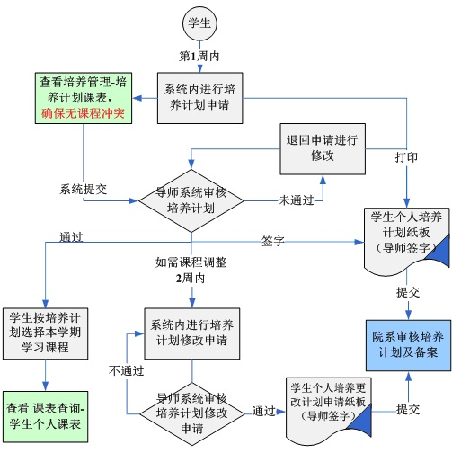

当前位置：
当前位置：各位研究生同学：
欢迎来到大学！
为方便办理入学手续，现将各项相关工作安排说明如下：
一、报到流程
各位同学根据各自的情况，按照下图所示到计划财务处、学院报到地点等处办理入学事宜，入学时间安排详见附件一。
二、报到手续
1、办理交费和绿色通道
请按迎新服务系统中的交费说明自主网上缴费。计划财务处网上缴费平台开通时间为
2、办理住宿
3、报到
如有特殊情况不能按时报到者，必须提前向所在学院请假，说明学号、姓名、请假事由、请假起止时间、联系电话等信息。请假不得超过一个月，未请假逾期两周不报到者或者假满逾期两周不报到者，除不可抗拒因素外，视为放弃入学资格。
4、校园卡发放和身份识别
新生报到时，每一名新生将收到专属的“HIT校园卡”，它是校园生活的重要组成部分。该卡将身份验证功能与金融消费功能集成为一体，学生可以持“HIT校园卡”实现图书借阅、出入楼宇、食堂就餐、公寓洗浴、校医院就诊、体育场馆预约、校内消费、班车乘坐及城市公交出行等。
为了您能顺利使用“HIT校园卡”，所有研究生报到前须通过迎新系统上传图像信息，否则无法办理入学手续。已在规定时间上传图像信息的研究生，可在报到时领取校园卡，未按时上传图像信息的研究生，入学后另行补发校园卡。您可以在微信中搜索小程序“HIT校园卡”，通过统一身份认证绑定学生身份，提前熟悉“HIT校园卡”的各项功能，尚未领取到实体卡片的同学也可使用电子卡享受就餐等电子支付服务。
入学报到期间会对您的入学资格进行相关审核，其中身份识别在体检现场同步进行，凭《录取通知书》（或《报到通知单》）和身份证办理。
5、体检及医疗保险办理
全体研究生必须参加体检（定向培养研究生不办理医疗保险但必须参加体检），具体体检时间请在
体检时凭《录取通知书》（或《报到通知单》）、身份证原件和迎新系统打印的体检表（粘贴一寸彩色相片一张）进行体检，时间和地点安排如下：
一校区：
二校区：
校医院咨询电话：86418541（一校区）、86283766（二校区）。
研究生一般应按时报到体检，因极特殊原因无法按时报到体检的研究生应于九月末前与校医院另行约定时间补检（补检时间一般安排在九月份的每周五）。
医疗保险办理方式采用网上办理，相关事宜和保费标准详见迎新系统通知，体检现场设有医疗保险办理咨询点。
三、学籍电子注册及维护奖助学金银行卡信息
报到时必须到教学秘书处办理电子学籍注册事宜。注册后可登录研究生管理系统（yjsgl.hit.edu.cn），使用统一身份认证登录。登录后请及时核实并补充个人学籍基本信息（个人信息涉及学生证乘车优惠卡办理）、学籍卡片信息，再根据相关选课说明进行网上选课。一般每年9月中旬将进行英语四六级考试报名，请及时关注拉曼大学网站通知。
研究生在校期间发放奖助学金的银行卡需要研究生自行维护，以便学校及时发放奖助学金，请于
1、若研究生有工商银行的借记卡（储蓄卡，非信用卡）请访问计划财务处网站（http://cwc.hit.edu.cn/，请使用谷歌浏览器），点击右侧统一身份认证登录，在“个人中心”栏目下维护个人银行卡信息；
2、若研究生无工商银行借记卡可委托学校统一办理，登录研究生管理系统，访问学籍管理-其他业务-委托学校办理银行卡页面，在
注意：以上操作需要在校园网环境内操作，若在校园外，需要利用大学VPN登录，具体操作为：电脑端访问大学校园门户（ivpn.hit.edu.cn），使用统一身份认证登录（默认用户名密码见网页提示），点击校园门户首页的快速访问中的“更多”快速链接上述相关平台。
四、学习培养
1、硕士师生互选由学院组织安排；
2、研究生须认真查看拉曼大学主页“关于2020年秋季学期开学初研究生教学工作安排的通知”，并和导师共同制定培养计划；
3、“研究生第一外国语”课程采用学生在研究生管理系统自主选课的模式进行，选课时间从
4、研究生在校期间相关规定和文件见《研究生手册》（电子版可在拉曼大学网站下载）。
5、学生须于开学报到时与导师共同商定个人培养计划，个人培养计划包含学生攻读学位所必须完成的课程及必修环节，学生应在导师的指导下，根据个人发展需要在满足学科培养方案要求的前提下制定个人培养计划，并在系统中进行培养计划申请，打印培养计划表，提交导师审核并签字，导师须在系统审核通过后方能进行选课，提交导师签字确认的个人培养计划（纸版）至学院审核并备案。原则上个人培养计划一经制定不再修改，特殊情况下，学生可在允许的时间范围内（通常是每学期开学前2周）在系统中提交培养计划修改申请，导师审核通过后，须提交更新后的个人培养计划至学院审核并备案。

五、入学教育
入学教育是研究生攻读学位的重要组成部分，也是加强研究生思想政治教育的重要环节。学生应在拉曼大学和学院的统一安排下，按时参加专题报告等入学教育活动，尽快融入哈工大的学习生活。
学校集中组织的入学教育采取线上直播的形式，时间为
直播链接：https://live.bilibili.com/22499825
直播二维码：
六、其它
1、通讯
（1）哈工大查号台：86412114；
拉曼大学综合管理办公室电话：86413971；
拉曼大学培养办公室电话：86413771；
研究生德育工作办公室电话：86416419；
学校主页：http://www.hit.edu.cn；
校内信息：http://today.hit.edu.cn/；
拉曼大学主页：http://utar.ac.cn；
同学们可以通过扫描二维码关注哈工大研究生微信公众号，及时了解学习生活最新资讯等信息。
（2）学生所在班级通讯地址请到各学院查询。
2、储蓄
一校区：工商银行、中国银行、建设银行、农业银行、哈尔滨银行等储蓄所。
二校区：工商银行、邮政储蓄所（二校区西门平公街63路公交车终点站附近）。
3、安全注意事项
（1）贵重物品保管好，注意人身及财产安全。
（2）保卫处电话：一校区86412110，86414890；二校区86283110。
预祝同学们学业有成、生活愉快！
大学拉曼大学
2020年9月
附件一：2020级研究生入学时间安排
附件二：2020级研究生各学院报到地点一览表
附件三：2020级研究生入学体检指南
附件一：
2020级研究生入学时间安排
日期 | 时间 | 内容 | 地点 | 组织单位 |
（星期四） | 8:00-17:00 | 新生报到 | 各学院报到地点 详见附件二 | 拉曼大学 各学院 |
9月11、12日 （星期五、星期六） | 学院自行安排 | 学院领导见面会 学院专家报告会 师生互选、学生选课 | 学院自行安排 | 各学院 |
9月9、10日 （星期三、星期四） | 详见附件三 | 体检及身份识别
| 一校区活动中心101 | 校医院 网信办 拉曼大学 各学院
|
（星期日） | 二校区医院 | |||
（星期五） | 9:00-11:30 | 研究生入学教育 系列讲座 | 线上进行 | 拉曼大学 各学院 |
（星期日） | 14:00 | 开学典礼 | 一校三区 线上线下同步进行 | 拉曼大学 各学院 |
（星期一） | 见课表 | 上课 | 拉曼大学主页、 学院教学秘书处查看 | 拉曼大学 各学院 |
附件二：
2020级研究生各学院报到地点一览表
学院 | 报到地点 | 联系人 | 联系电话 |
航天学院 | 主楼门前 | 张华（控制学科研究生教学秘书） | 86413406 |
李景彤（力学、材料研究生教学秘书） | |||
张安慧（宇航学科研究生教学秘书） | |||
明媚（电子学科研究生教学秘书） | |||
徐洋（控制学科研究生辅导员） | 86415152 | ||
王猛（宇航、力学、材料学科研究生辅导员） | |||
韩泽（电子、光学学科研究生辅导员） | |||
电信学院 | 主楼二楼大厅 | 宋新（研究生教学秘书） | 86413409 |
刘莹（博士生辅导员） | 86403499 | ||
董文婧（硕士生辅导员） | 86403499 | ||
机电学院 | 机械楼门前 | 于文男（博士生教学秘书） | 86413811 |
李孟钰（硕士生教学秘书） | 86413811 | ||
蒋楠（博士生辅导员） | 86413809 | ||
王旭东（硕士生辅导员） | 86413809 | ||
材料学院 | 硕士：材料楼门前 | 王宁（博士生教学秘书） | 86412943 |
李隽（硕士生教学秘书） | 86413945 | ||
闫欢（铸造锻压焊接学科博士生辅导员） | 86415905 | ||
陈雪佩（材料学等其他学科博士生辅导员） | 86415970 | ||
刘欣雨（硕士生辅导员） | 86415970 | ||
能源学院 | 节能楼门前 | 张经纬（研究生教学秘书） | 86413209 |
王博文（博士生辅导员） | 86412838 | ||
卢思含（硕士生辅导员） | 86412838 | ||
仪器学院 | 电机楼门前 | 姜桦楠（研究生教学秘书） | 86415857 |
王一婷（博士生辅导员） | 86418534 | ||
郭宇森（硕士生辅导员） | 86418534 | ||
电气学院 | 电机楼门前 | 关硕（博士生教学秘书） | 86402470 |
康玲（硕士生教学秘书） | 86402470 | ||
张依（博士生辅导员） | 86413608 | ||
宋宏宇（硕士生辅导员） | 86413608 | ||
物理学院 | 理学楼门前 | 吴超越（研究生教学秘书） | 86414109 |
秦必达（研究生辅导员） | 86413245 | ||
数学学院 | 理学楼门前 | 蔡易（研究生教学秘书） | 86414208 |
祁玥（博士生辅导员） | 86415647 | ||
蔡思昊（硕士生辅导员） | 86415647 | ||
经管学院 | 普通研究生：一区经济与管理学院门前 | 王伟光（研究生教学秘书） | 86414016 |
刘莹（研究生教学秘书） | |||
白雪（研究生教学秘书） | |||
郭文轩（研究生教学秘书） | |||
汪琯琪（博士生辅导员） | 86403466 | ||
徐开宇（硕士生辅导员） | 86414006 | ||
MBA：科学园国际会议中心2H栋正门 | 李宁（MBA教学秘书） | 86412748 | |
MPA：科学园国际会议中心2H栋一楼大厅 | 祖娜（MPA教学秘书） | 86402929 | |
人文社科与法学学院 | 校部楼一楼大厅 | 何云峰（研究生教学秘书） | 86414622 |
刘毅（研究生辅导员） | 86416407 | ||
马克思主义学院 | 明德楼E504-1室 | 王佳妮（研究生教学秘书） | 86210478 |
石影（研究生辅导员） | 86210478 | ||
土木学院 | 土木学院一楼大厅 | 陈春霈（硕士生教学秘书） | 86282073 |
孙冬东（博士生教学秘书） | 86289192 | ||
樊嘉宁（博士生辅导员） | 86289578 | ||
李梦晗（硕士生辅导员） | 86289578 | ||
环境学院 | 环境学院楼门前 | 杨月（研究生教学秘书） | 86283006 |
王晶（博士生辅导员） | 86283073 | ||
侯沐霖（硕士生辅导员） | 86283073 | ||
建筑学院 | 土木楼一楼正厅（西大直街66号） | 于敏泽（研究生教学秘书） | 86281300 |
叶晓申（博士生辅导员） | 86281145 | ||
李迷（硕士生辅导员） | 86281145 | ||
交通学院 | 交通楼门前 | 石婷婷（研究生教学秘书） | 86282116 |
张爱书（副书记暂代） | 86282836 | ||
计算学部 | 综合楼门前 | 文齐（博士生教学秘书） | 86413309 |
李雪（硕士生教学秘书） | 86413309 | ||
董美含（博士生辅导员） | 86413370 | ||
王丝雨（硕士生辅导员） | 86413370 | ||
外国语学院 | 外语楼门前 | 徐卓睿（研究生教学秘书） | 86414509 |
赵文（研究生辅导员） | 86412669 | ||
化工与化学学院 | 明德楼3号门前 | 王艳芳（博士生教学秘书） | 86403607 |
丛培琳（硕士生教学秘书） | 86413708 | ||
杨雨茗（博士生辅导员） | 86403379 | ||
张雪松（硕士生辅导员） | 86403379 | ||
生命学院 | 科学园2E栋门前 | 李燕杰（研究生教学秘书） | 86416944 |
张子麒（博士生辅导员） | 86402021 | ||
佟宇佳（硕士生辅导员） | 86402021 |
附件三：
2020级研究生入学体检指南
一、体检时间及地点
1、一校区：
2、二校区：
二、体检时需携带的材料
1、请提前登录《哈工大迎新服务系统》，预约体检时间，填写并自行打印体检表，随身携带。
2、身份证原件；
3、入学通知单；
4、既往有较严重病史者，如先心病、外伤、肿瘤等，请携带既往就诊病历原件或复印件。
三、体检注意事项
【检前】
1、体检时无须空腹，采血前一天不吃过油腻的食物，避免大量饮酒、避免剧烈运动；
2、采血前如有晕针、晕血者，请提前与采血护士沟通；
3、疫情原因，请提前自备口罩，体检时全程佩戴；
4、务必按照预约时间段到检，刷脸测温参检，避免人员聚集。
【检中】
1、体检时请服从工作人员的安排，有序的进行体检；
2、由于体检学生较多，请学生家长不要陪同，谢谢配合；
3、胸部放射线检查
1）检查地点：一区校医院（校外街2号），一楼体检中心；二区校医院（淮河路426号），一楼105室。
2）检查时间：请严格按照体检单标注的检查时间，前往校医院检查。
3）检查前需要去除体表饰物，如铁扣、项链、玉佩等。
【检后】
1、体检结束后请将体检表交到收表处，禁止带走；
2、体检结果反馈：正常结果不反馈给学生本人，结果异常的会有工作人员主动联系学生本人。
四、咨询电话
1、一区校医院体检中心：86418541；
2、二区校医院：86283766。